User categorisation & interview guide
Together with my team we start the project by creating user
categorization and an interview guide. At this stage our focus is
to create questions in order to learn about people’s cooking
preferences and recipe usage. For idea generation and brainstorming
we use Figma to keep everything in one place.

In interview guide two research questions are distinguished:
What is users' attitude towards cooking?
This research question serves the purpose to gather more insights
how the users like cooking. Which parts of cooking process are the
difficult ones, then which are the more pleasant. And what could be
their motivation to find a recipe for special occasions.
What is the motivation behind using recipes?
This research question serves the purpose to reveal why users use
recipes. How do they use them in the process of cooking. And what
could be the key factor in the choice from multiple sources.
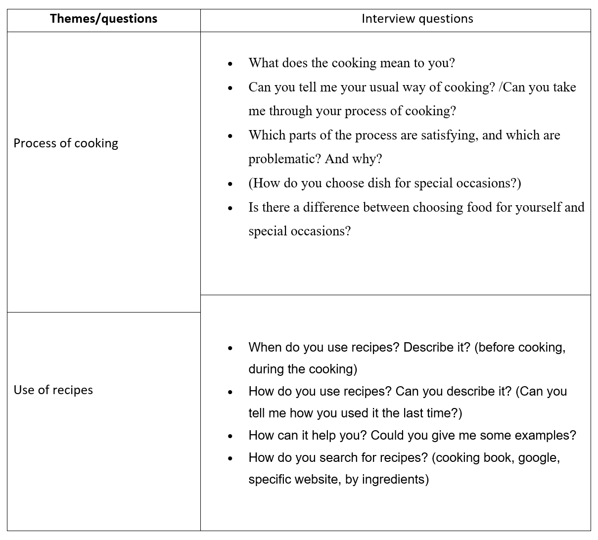
Sketches
The process of prototyping consisted of three stages – sketches,
wireframes and mock-ups – each of them refined by iterations.
Drawn sketch starts with a global navigation. This page is intended to
satisfy the user with information about where they are on the page
and what information users will find on this page. Call-to-action
buttons are used to support progressive disclosure and interactivity
with the page itself. The landing page informs users of two sections
with the most popular recipes and interesting articles related to
food.

This sketch shows what an active section can look like. When users
are interested in international cuisine, they see lists of recipes
belonging to this group. This page uses the principle of the
example. Users can see teaser images of recipes and their names. The
breadcrumb appears in the upper-left corner to let users know where
they are on the page. Footer consists of social media bar and
copyright.

Wireframes
For the landing page, the content of the header is now swapped. The
page title, paragraphs, and call-to-action button are on the left,
while the hero image takes place on the right. The header is
followed by three other sections, with different categories. The
first one, names "experience something new" is to show random
recipes from all categories. Next one, "pasta-bilities" is to show
pasta dishes, as from the user research it turned out that they are
one of the most popular. The principle of example is used to for the
headers by showing an image of a specific dish. The informative
design is also fulfilled by that.

On the category page, sub-navigation is in use to filter all of the
information, which users can choose from. The main part consists of
the three cards per row. Each card is represented by an image of the
dish, a heading for the recipe name and a paragraph for the teaser.

Mock-ups
Hero image is used for the home page to catch user’s attention and
to give them a teaser about the website content. On the left side of
the hero image heading, paragraph and the button are placed with the
usage of visual hierarchy rules. The next two sections are designed
with the usage card pattern – the idea is to display three recipes
of the two most popular categories (Neil, 2014). The cards – with
recipes’ image, name and short description – act as the progressive
disclosure and encourage users to interact by clicking on them. A
button gives a possibility to visit a page where all recipes of this
category are displayed.

Sub navigation is displayed with a help of buttons. Each button
represents a single category. Whe the category is clicked, the
content changes accordingly. Similarly to to landing page, each
recipe teaser is displaye with a usage of deisgn pattern.

Wordpress and structured data
The essence of the project is working with structured content and to
exchange the data through API. For that reason, Wordpress is used to
store the selected recipes and articles from Foodista website.
Structured data is used to help to display content dynamically on
the page. All data are fetched through WordPress, where all the
data are structured based on our needs for the website.
To structure the data, we use advanced custom fields. This way we
create a template for all recipes and articles.
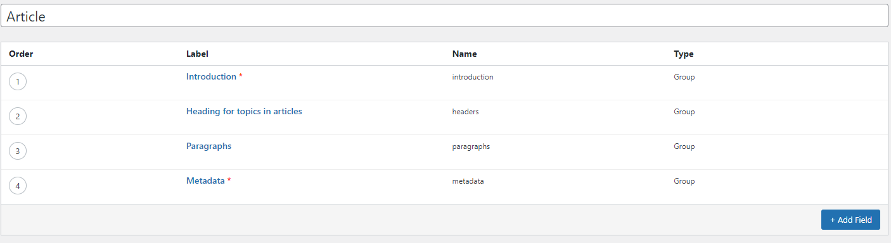
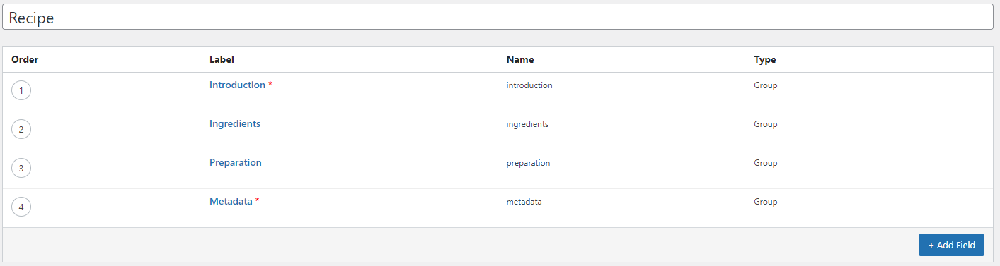
Then, while adding a post, there is an option to choose one of the
categories we created. Thanks to that, instead of writing the text
all together in the same place, we get our custom fields.
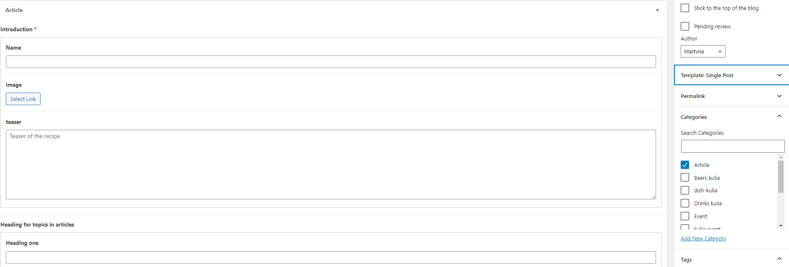
Moreover, as there are different types of food, such as
international food, seasonal, Italian etc., there is a possibility
to create and add a specific tag with an individual id, which will
be used to fetch the required recipes.
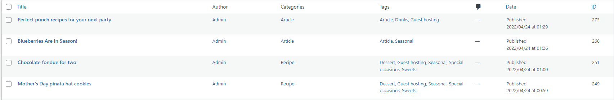
Once the wordpress is set up, links are tested in WordPress.
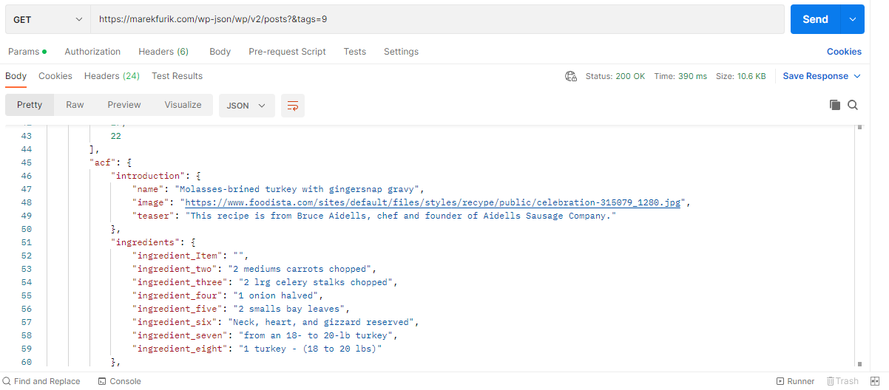
Fetching data
All the data has a unique number (id) in Wordpress, as well as the
categories they are in. This specific number is used to fetch the
required recipes for the frontend solution.
Recipes as called by tags to draw a markup for a recipe teaser.
Also, the id will be used in the URL to access a single recipe page.
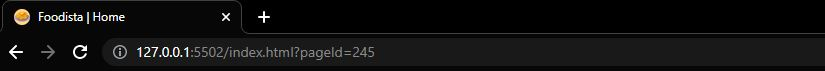
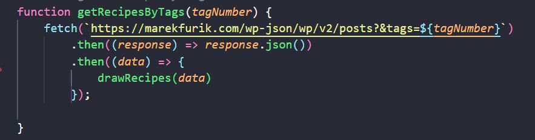
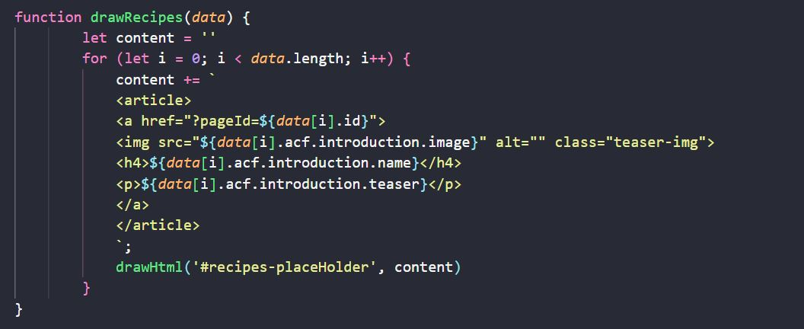
To create a designated recipe or article post, the data from
wordpress is called by id.
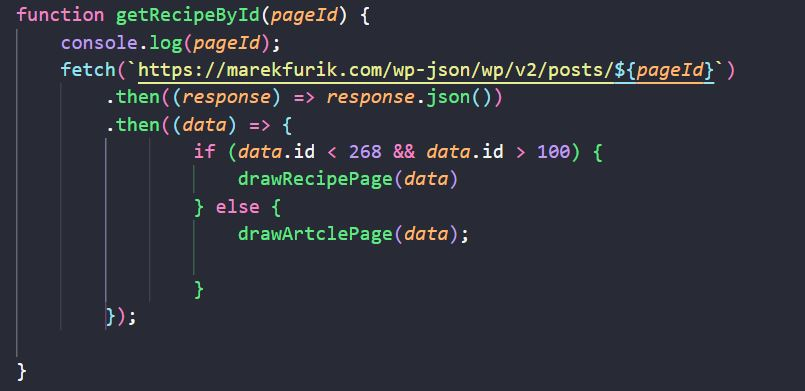
Then, the data is used to create a single recipe/article page and
display the content.
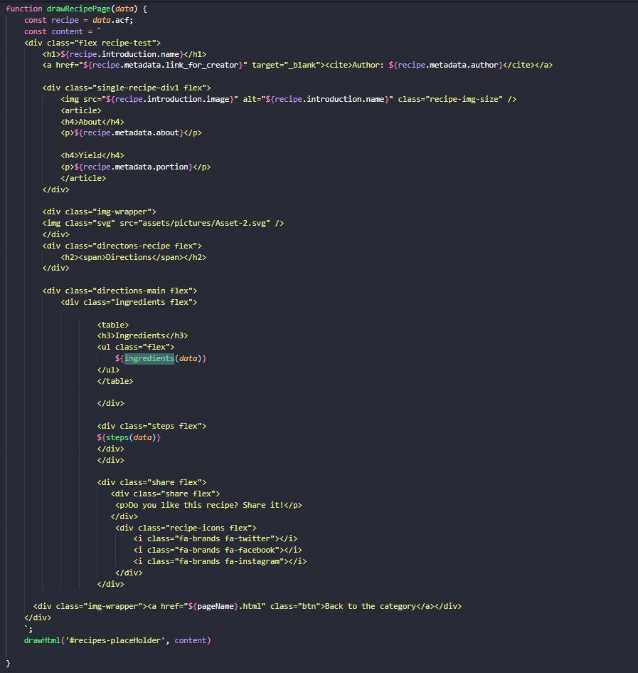